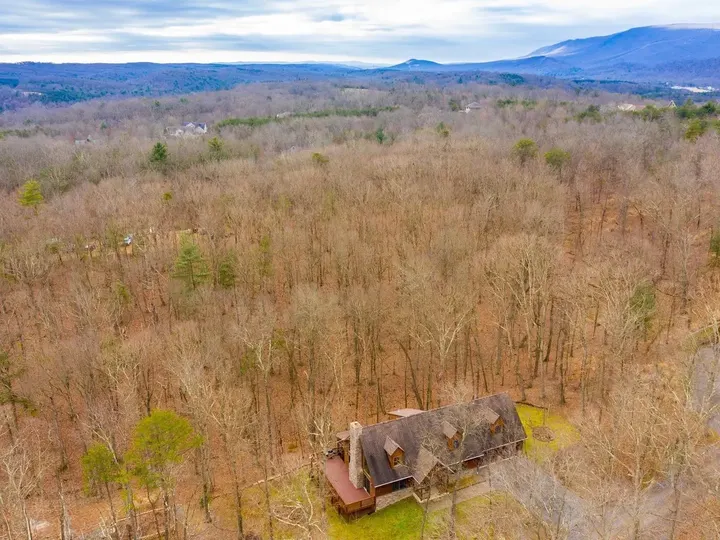
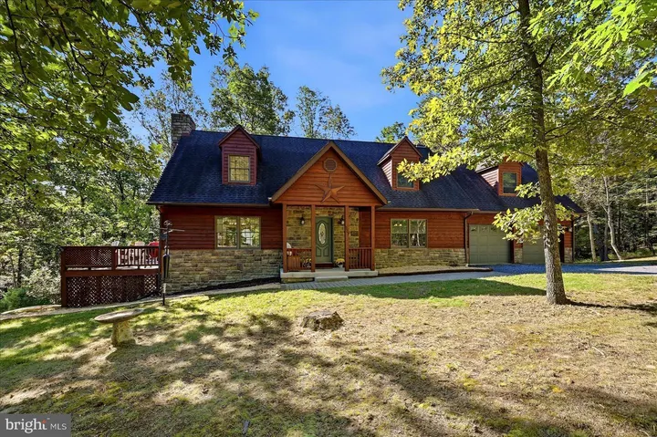
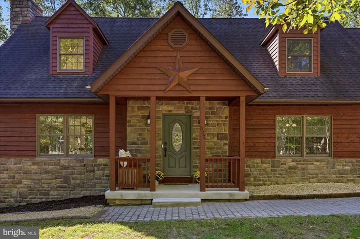
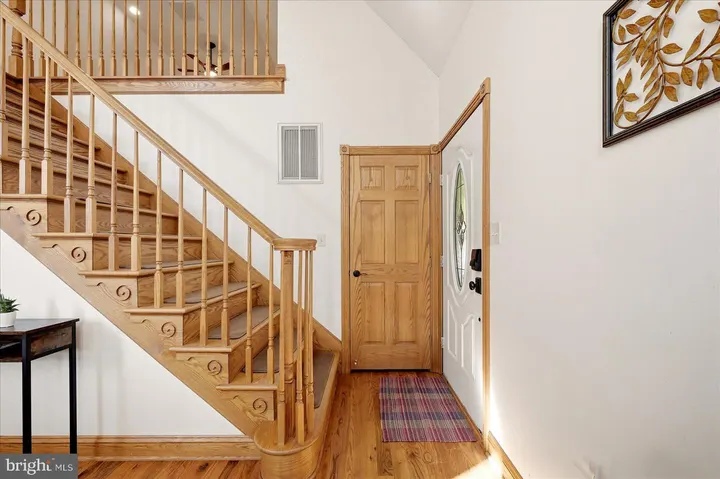
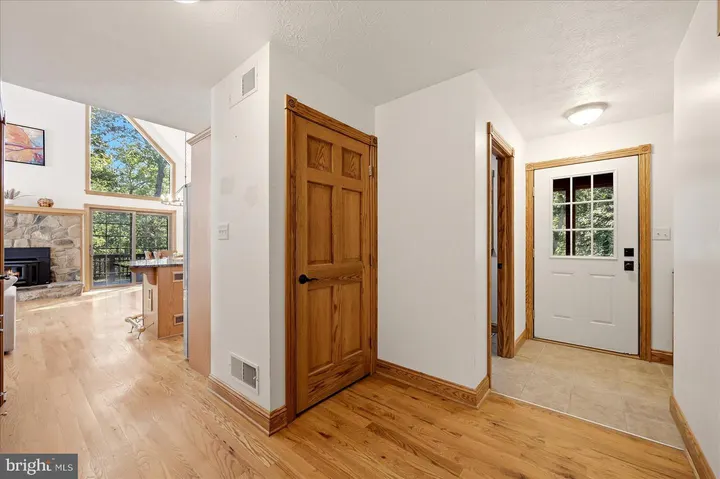
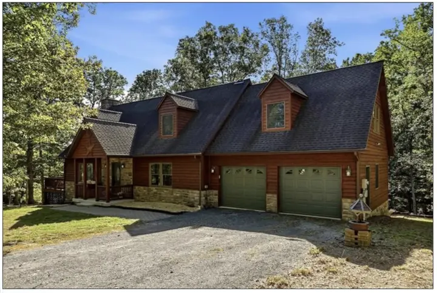
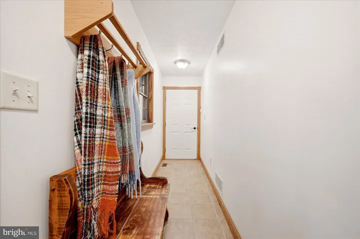

Modern cabin in the woods, one mile from Cacapon Resort State Park. Built by a local craftsman, this one-of-a-kind home is full of thoughtful details, custom trimwork and little flourishes throughout. Nestled on 2.9 wooded acres in the Appalachian Mountains, this 2-bedroom, 2.5-bath retreat feels worlds away from city life, yet sits just about two hours from Washington, D.C., and Baltimore. Modern luxuries include a chef’s kitchen, up to 7-gigabit fiber internet with Starlink satellite backup, and a spacious two-car garage with an outlet for fast Level 2 EV charging.






